Amazing Spider-Man Vol 4 (2015 - 2018)
| Comic Book | Release Date | Cover |
|---|---|---|
| Amazing Spider-Man Vol 4 #1 Worldwide | 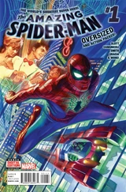 | |
| Amazing Spider-Man Vol 4 #1.1 Amazing Grace – Part One: A Wretch Like Me | 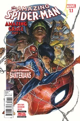 | |
| Amazing Spider-Man Vol 4 #1.2 Amazing Grace – Part Two: My Heart to Fear | 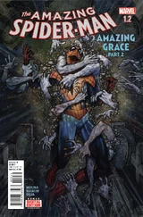 | |
| Amazing Spider-Man Vol 4 #1.3 Amazing Grace – Part Three: Dangers, Toils and Snares | 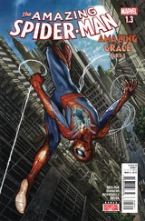 | |
| Amazing Spider-Man Vol 4 #1.4 Amazing Grace – Part Four: Within the Veil | 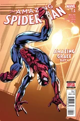 | |
| Amazing Spider-Man Vol 4 #1.5 Amazing Grace – Part Five: Flesh and Heart Shall Fail | 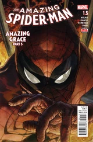 | |
| Amazing Spider-Man Vol 4 #1.6 Amazing Grace – Part Six: Lead Me Home | 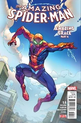 | |
| Amazing Spider-Man Vol 4 #2 Water Proof | 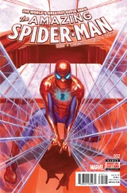 | |
| Amazing Spider-Man Vol 4 #3 Friendly Fire | 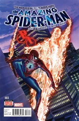 | |
| Amazing Spider-Man Vol 4 #4 High Priority | 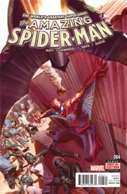 | |
| Amazing Spider-Man Vol 4 #5 Set in Stone | 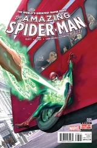 | |
| Amazing Spider-Man Vol 4 #6 The Dark Kingdom - Part 1: Turnabout | 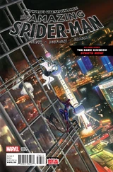 | |
| Amazing Spider-Man Vol 4 #7 The Dark Kingdom - Part 2: Opposing Forces | 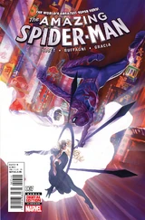 | |
| Amazing Spider-Man Vol 4 #8 The Dark Kingdom - Part 3: Black & White | 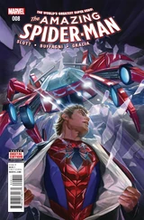 | |
| Amazing Spider-Man Vol 4 #9 Scorpio Rising - Part 1: One-Way Trip | 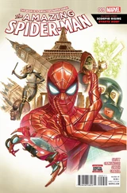 | |
| Amazing Spider-Man Vol 4 #10 Scorpio Rising - Part 2: Power Play | 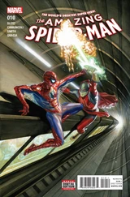 | |
| Amazing Spider-Man Vol 4 #11 Scorpio Rising - Part 3: Signs From Above | 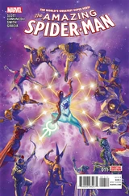 | |
| Amazing Spider-Man Vol 4 #12 Power Play - Part 1: The Stark Contrast | 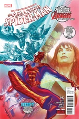 | |
| Amazing Spider-Man Vol 4 #13 Power Play - Part 2: Civil War Reenactment | 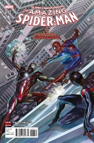 | |
| Amazing Spider-Man Vol 4 #14 Power Play - Part 3: Avengers Assembled | 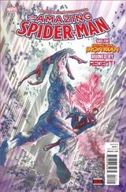 | |
| Amazing Spider-Man Vol 4 #15 Power Play - Conclusion: Suit Yourself | 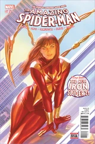 | |
| Amazing Spider-Man Vol 4 #16 Before Dead No More - Part One: Whatever the Cost | 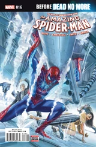 | |
| Amazing Spider-Man Vol 4 #17 Before Dead No More - Part Two: Spark of Life | 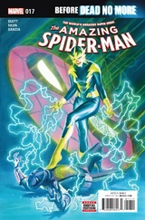 | |
| Amazing Spider-Man Vol 4 #18 Before Dead No More - Part Three: Full Otto | 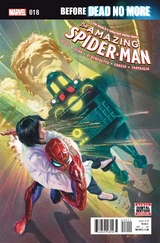 | |
| Amazing Spider-Man Vol 4 #19 Before Dead No More - Part Four: Change of Heart | 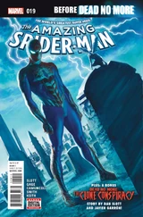 | |
| Amazing Spider-Man Vol 4 #20 Spider-Man's Superior | 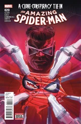 | |
| Amazing Spider-Man Vol 4 #21 Live Another Day | 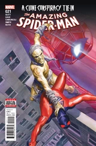 | |
| Amazing Spider-Man Vol 4 #22 Seeing Red | 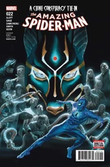 | |
| Amazing Spider-Man Vol 4 #23 The Moment You Know | 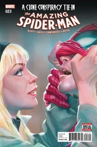 | |
| Amazing Spider-Man Vol 4 #24 Night of the Jackals | 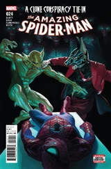 | |
| Amazing Spider-Man Vol 4 #25 The Osborn Identity - Part One: Bug Hunt | 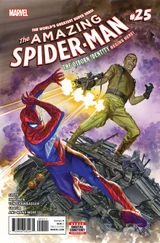 | |
| Amazing Spider-Man Vol 4 #26 The Osborn Identity - Part Two: Fight or Flight | 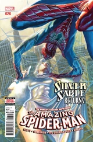 | |
| Amazing Spider-Man Vol 4 #27 The Osborn Identity - Part Three: A Private War | 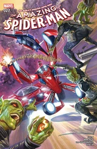 | |
| Amazing Spider-Man Vol 4 #28 The Osborn Identity - Part Four: One-on-One | 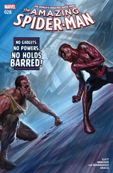 | |
| Amazing Spider-Man Vol 4 #29 Secret Empire - Part One: Rightful Ruler | 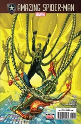 | |
| Amazing Spider-Man Vol 4 #30 Secret Empire - Part Two: Master Planning | 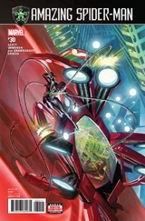 | |
| Amazing Spider-Man Vol 4 #31 Secret Empire - Part Three: End of an Empire | 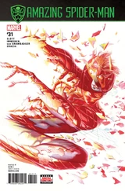 | |
| Amazing Spider-Man Vol 4 #32 Personal Demon | 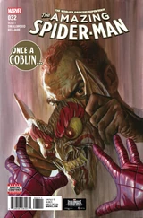 | |
| Amazing Spider-Man Vol 4 #789 Fall of Parker: Part 1 -- Top to Bottom | 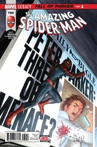 | |
| Amazing Spider-Man Vol 4 #790 Fall of Parker: Part 2 -- Breaking Point | 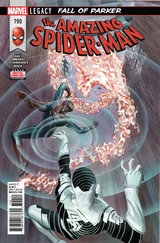 | |
| Amazing Spider-Man Vol 4 #791 Fall of Parker: Part 3 -- Back to Ground | 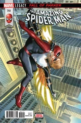 | |
| Amazing Spider-Man Vol 4 #792 Venom Inc. Part Two | 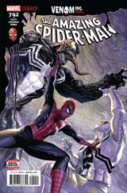 | |
| Amazing Spider-Man Vol 4 #793 Venom Inc. Part Four | 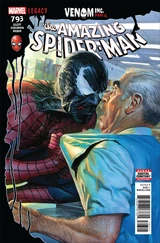 | |
| Amazing Spider-Man Vol 4 #794 Threat Level: Red - Part 1: Last Chance | 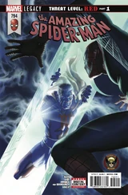 | |
| Amazing Spider-Man Vol 4 #795 Threat Level: Red - Part 2: The Favor | 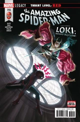 | |
| Amazing Spider-Man Vol 4 #796 Threat Level: Red - Part 3: Higher Priorities | 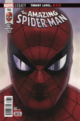 | |
| Amazing Spider-Man Vol 4 #797 Go Down Swinging - Part 1: The Loose Thread | 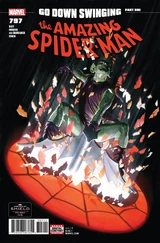 | |
| Amazing Spider-Man Vol 4 #798 Go Down Swinging - Part 2: The Rope-A-Dope | 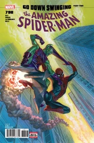 | |
| Amazing Spider-Man Vol 4 #799 Go Down Swinging - Part 3: The Ties That Bind | 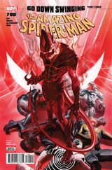 | |
| Amazing Spider-Man Vol 4 #800 Chapter One: Crawling Through the Wreckage | 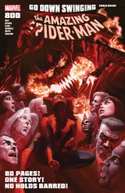 | |
| Amazing Spider-Man Vol 4 #801 There For You |